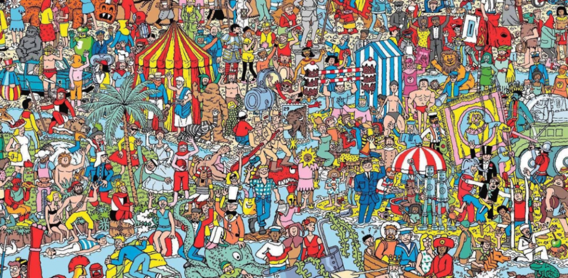
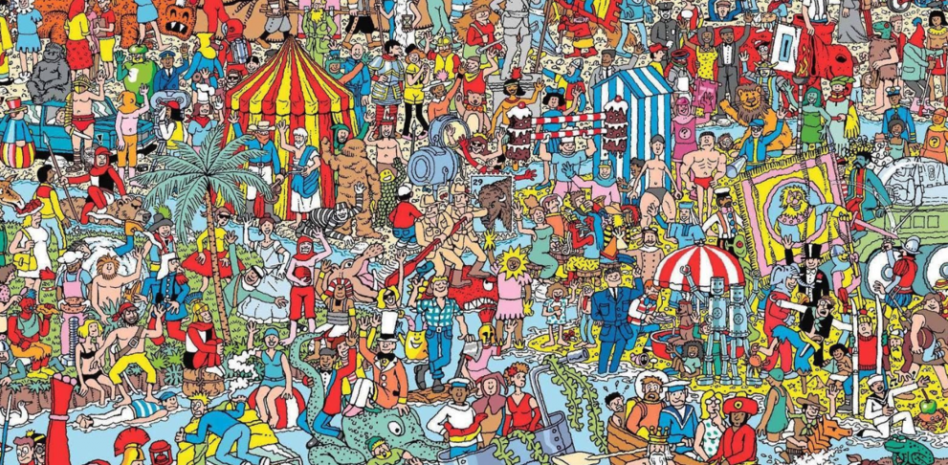

Criptografía | Hello Cryptography
2024 Jul 19
See all posts
Criptografía | Hello Cryptography
Hace un mes aprox me confirmaban que iba a ser parte del PSE Core Program. Un programa de
la Ethereum Foundation de 8 semanas que busca educar en criptografía a
estudiantes universitarios.
La semana que viene arranca el PSE Core Program y esta semana (week
0) nos introducimos al mundo de las ZK proofs y asentamos algunas bases.
Mi idea es ir presentando algunos temas y dejando algunas reflexiones
semana a semana. No solo me sirve a mi para asentar conocimientos, sino
también puede servir para aquellos que estén interesados en el tema.
Mi idea es hacer una serie de post de criptografía con temas que me
interesen. Los vas a poder identificar por el prefijo
Criptografía | en el título.
A veces pienso que está todo creado, que ya nada puede ser inventado,
y luego aparecen cosas como las zk proofs que te dejan pensando "cómo
algo así puede ser posible?"
Algo parecido me pasó la primera vez que escuché sobre bitcoin y peor
aún cuando leí el paper.
Y si no te interesa, por lo menos lee este post que te va a dejar
volando la cabeza, y si te llamás Nacho: ‘Nacho, ¡agarrate los
pantalones!'

¿Donde está Wally?
Donde está Wally es un libro que tiene imágenes como la de abajo (un
quilombo de gente y cosas basicamente) y en la que tu objetivo es
encontrar a Wally, un npc en toda regla.

Si de pibe lo conociste y lo jugaste, seguro hayas pasado un buen
rato buscandolo, más del que te gustaría admitir.
Quizás en algún momento llegaste a pensar si Wally realmente estaba
en la imagen o el libro/autor/editorial te estaba cagando.
Wally a juicio
Imaginate que sos el hijo de un abogado y le decís a tu viejo que
Wally no está en el libro que te compraron, obvio tu viejo lleva a Wally
(a la editoria) a juicio.
El jucio es bien fácil, la editorial tiene que probar que Wally se
encuentra en la página en la que estabas jugando. Pero hay algo más:
como vos no querés que te caguen la sorpresa, la editorial no puede
revelar en que posición de la página se encuentra Wally.
Wait... Wtf?
Demostrar que Wally está, pero sin decir donde está? Parece
imposible, pero el abogado defensor además de abogado es un entusiata
matemático (nada más alejado de la realidad).
Se le ocurre lo siguiente, poner una gran sábana con un agujero bien
chiquito en el centro. Detras de la sábana, colocar la página del libro,
alineando justo la cara de Wally con el agujero de la sábana.
Presenta este set up en el juicio y mirando por el agujero,
tu viejo se de que Wally está en la página, y además no revela en que
parte de la página está para que vos puedas jugar a encontrarlo.
Este es el ejemplo canónico de una Zero Knowledge Proof.
Si no encontraste a Wally, está arriba a la derecha.
Acá van otros experimentos mentales:
- Two
balls and the colour-blind friend
- The
Ali Baba cave
ZK Proofs
Ahora sí, de lleno en ZK. Espero que los ejemplos anteriores te hayan
motivado y ahora estés en modo "Ohhh ok... interesante".
Una Zero Knowledge Proof es un método criptográfico para
probar que algo es cierto, sin revelar ningún tipo de información
extra.
Otro ejemplo canónico de lo que NO es una ZK Proof podría ser el caso
en que con tus 18 años recién cumplidos, vas a un boliche con tus
amigos. Lllegás a la puerta y el guardia te pide el DNI. En realidad lo
que busca es validar que sos mayor de 18 años para poder entrar. Pero en
ese proceso, además de verificar tu edad, le revelas otros datos
sensibles como tu número de documento y tu dirección.
En realidad, en ese momento solo querés demostrar que sos mayor de
18, sin revelar ningún tipo de información extra, una ZK proof sería
ideal.
En toda ZK existen dos tipos de personas: un prover aquel
que quiere probar algo, y un verifier, aquel que verifica si el
statement del prover el verdadero.
Propiedades
Mi idea no era meterme en teoría, pero es obligatorio nombrar las
tres propiedades que tiene que cumplir una ZK proof:
- Completeness: Si un statement es verdadero, el
prover debe poder convencer al verifier de que el statement es
verdadero. Muchas veces implica que la probabilidad de dar algo como
verdadero siendo falso sea muy baja.
- Soundness: Si un statement es falso, no existe un
prover engañoso que pueda convencer al verifier de que la declaración es
verdadera, de nuevo con un margen de error muy pequeño.
- Zero Knowledge: Si el statement es verdadero, el
verifier no aprende nada más que este hecho.
Si querés saber más desde lo teórico fijate este
blog post
Te recomiento que intentes entender cómo se prueba la última
propiedad.
Interactive vs
non-interactive
Esta es una categorización que me parece interesante. Si pudiste ver
los ejemplos de ZK que dejé arriba, seguro viste el de La Cueva de
Alibaba. Seguro viste que la idea de la prueba es ir preguntando varias
veces lo mismo como para ver si en alguna de esas preguntas el prover se
da una respuesta falsa y podemos determinar que el statement es
falso.
Esa idea se repite varias veces en un montón de ejemplos: imaginate
que alguien te dice que es un crack adivinando cosas, como el clima,
seguramente la mejor forma de probarlo sea preguntandole todos los días
¿Cómo va a estar el clima mañana?. Mientras más predicciones se cumplan,
mayor será tu confianza en que esa persona realmente predice como va a
estar el clima.
En ZK es lo mismo, a medida que repetimos experimentos y el prover
siempre responde satisfactoriamente, vamos generando confianza en que
sabe de lo que está hablando, esas son las interactive
proofs.
Ahora surge el problema con el que siempre nos encontramos los
programadores, se puede mejorar/eficientizar eso? Tener que repetir
muchas veces un experimento para convencernos de que algo es cierto no
parece muy económico (no lo es).
De allí surge la necesidad de las non-interactive
proofs. En estas, por medio de un único experimento nos podemos
convencer de que el statement es cierto.
Acá otra vez un ejemplo canónico que a mi me sorprendió una banda
cuando lo leí: Zero-Knowledge
Proof For Sudoku Using Standard Playing Cards. Dale, anda a leerlo y
después volvé.
Este ejemplo es non-interactive porque el prover y el
verifier solo se intercambian un mensaje, que alcanza para probar que el
tablero del sudoku está completo.
Casos de uso
Hay un post muy bueno de casos de uso de ZK proofs en Ethereum: Use-cases
for zero-knowledge proofs así que como el post se me está alargando
bastante voy a dejar que lo revises por tu cuenta.
Además en el último tiempo se estuvo trabajando en el desarrollo de
zk-rollups
que permiten usar ZK para validar las transacciones de una Layer 2, permitiendo escalar
Ethereum.
Pero más aún, Aztec está desarrollando lo que llaman ZK-ZK-Rollup
(sostienen que las actuales zk rollups no son tan zk), permitiendo
ocultar todos los inputs y outputs de una transacción en la blockchain.
Yo me quedé así cuando lo escuché 🤯
Si querés saber más, mirate esta charla de Santiago
Palladino
¿Cómo me meto en este mundo?
En principio tenés que saber algunas cosas matemáticas bastante
simples. Yo te voy a tirar algunos temas como para que bayas
googleando
- Números primos
- Factorización de enteros
- Aritmética modular
- Grupos y generadores
- Algo de programación general
Para la parte de programación, te recomiendo como siempre el CS50 de Harvard que es un poco largo
pero vale la pena 100%.
Despues de eso, lenguajes de programación hay muchos, pero recomiendo
que sepas algo de Javascript: este
curso de freecodecamp puede ser una buena opción.
En cuanto a lo matemático, si bien es un poco más dificil de aprender
online, te puedo recomendar dos cosas buenas que nos dejo la
pandemia:
- El fasciculo 9, material de la materia Álgebra I de las carreras de
exactas de la UBA. Acá
está
- Este canal de
youtube que tiene todas las clases del primer cuatrimestre 2021
Creo que con el capítulo 3 y 4 del fascículo 9 debería ser sufuciente
base algebráica, pero si tenés tiempo y ganas estudialo todo que está
buenísimo.
Salu2.
Criptografía | Hello Cryptography
2024 Jul 19 See all postsHace un mes aprox me confirmaban que iba a ser parte del PSE Core Program. Un programa de la Ethereum Foundation de 8 semanas que busca educar en criptografía a estudiantes universitarios.
La semana que viene arranca el PSE Core Program y esta semana (week 0) nos introducimos al mundo de las ZK proofs y asentamos algunas bases. Mi idea es ir presentando algunos temas y dejando algunas reflexiones semana a semana. No solo me sirve a mi para asentar conocimientos, sino también puede servir para aquellos que estén interesados en el tema.
Mi idea es hacer una serie de post de criptografía con temas que me interesen. Los vas a poder identificar por el prefijo Criptografía | en el título.
A veces pienso que está todo creado, que ya nada puede ser inventado, y luego aparecen cosas como las zk proofs que te dejan pensando "cómo algo así puede ser posible?"
Algo parecido me pasó la primera vez que escuché sobre bitcoin y peor aún cuando leí el paper.
Y si no te interesa, por lo menos lee este post que te va a dejar volando la cabeza, y si te llamás Nacho: ‘Nacho, ¡agarrate los pantalones!'
¿Donde está Wally?
Donde está Wally es un libro que tiene imágenes como la de abajo (un quilombo de gente y cosas basicamente) y en la que tu objetivo es encontrar a Wally, un npc en toda regla.

Si de pibe lo conociste y lo jugaste, seguro hayas pasado un buen rato buscandolo, más del que te gustaría admitir.
Quizás en algún momento llegaste a pensar si Wally realmente estaba en la imagen o el libro/autor/editorial te estaba cagando.
Wally a juicio
Imaginate que sos el hijo de un abogado y le decís a tu viejo que Wally no está en el libro que te compraron, obvio tu viejo lleva a Wally (a la editoria) a juicio.
El jucio es bien fácil, la editorial tiene que probar que Wally se encuentra en la página en la que estabas jugando. Pero hay algo más: como vos no querés que te caguen la sorpresa, la editorial no puede revelar en que posición de la página se encuentra Wally.
Wait... Wtf?
Demostrar que Wally está, pero sin decir donde está? Parece imposible, pero el abogado defensor además de abogado es un entusiata matemático (nada más alejado de la realidad).
Se le ocurre lo siguiente, poner una gran sábana con un agujero bien chiquito en el centro. Detras de la sábana, colocar la página del libro, alineando justo la cara de Wally con el agujero de la sábana.
Presenta este set up en el juicio y mirando por el agujero, tu viejo se de que Wally está en la página, y además no revela en que parte de la página está para que vos puedas jugar a encontrarlo.
Este es el ejemplo canónico de una Zero Knowledge Proof.
Si no encontraste a Wally, está arriba a la derecha.
Acá van otros experimentos mentales:
ZK Proofs
Ahora sí, de lleno en ZK. Espero que los ejemplos anteriores te hayan motivado y ahora estés en modo "Ohhh ok... interesante".
Una Zero Knowledge Proof es un método criptográfico para probar que algo es cierto, sin revelar ningún tipo de información extra.
Otro ejemplo canónico de lo que NO es una ZK Proof podría ser el caso en que con tus 18 años recién cumplidos, vas a un boliche con tus amigos. Lllegás a la puerta y el guardia te pide el DNI. En realidad lo que busca es validar que sos mayor de 18 años para poder entrar. Pero en ese proceso, además de verificar tu edad, le revelas otros datos sensibles como tu número de documento y tu dirección.
En realidad, en ese momento solo querés demostrar que sos mayor de 18, sin revelar ningún tipo de información extra, una ZK proof sería ideal.
En toda ZK existen dos tipos de personas: un prover aquel que quiere probar algo, y un verifier, aquel que verifica si el statement del prover el verdadero.
Propiedades
Mi idea no era meterme en teoría, pero es obligatorio nombrar las tres propiedades que tiene que cumplir una ZK proof:
Si querés saber más desde lo teórico fijate este blog post
Te recomiento que intentes entender cómo se prueba la última propiedad.
Interactive vs non-interactive
Esta es una categorización que me parece interesante. Si pudiste ver los ejemplos de ZK que dejé arriba, seguro viste el de La Cueva de Alibaba. Seguro viste que la idea de la prueba es ir preguntando varias veces lo mismo como para ver si en alguna de esas preguntas el prover se da una respuesta falsa y podemos determinar que el statement es falso.
Esa idea se repite varias veces en un montón de ejemplos: imaginate que alguien te dice que es un crack adivinando cosas, como el clima, seguramente la mejor forma de probarlo sea preguntandole todos los días ¿Cómo va a estar el clima mañana?. Mientras más predicciones se cumplan, mayor será tu confianza en que esa persona realmente predice como va a estar el clima.
En ZK es lo mismo, a medida que repetimos experimentos y el prover siempre responde satisfactoriamente, vamos generando confianza en que sabe de lo que está hablando, esas son las interactive proofs.
Ahora surge el problema con el que siempre nos encontramos los programadores, se puede mejorar/eficientizar eso? Tener que repetir muchas veces un experimento para convencernos de que algo es cierto no parece muy económico (no lo es).
De allí surge la necesidad de las non-interactive proofs. En estas, por medio de un único experimento nos podemos convencer de que el statement es cierto.
Acá otra vez un ejemplo canónico que a mi me sorprendió una banda cuando lo leí: Zero-Knowledge Proof For Sudoku Using Standard Playing Cards. Dale, anda a leerlo y después volvé.
Este ejemplo es non-interactive porque el prover y el verifier solo se intercambian un mensaje, que alcanza para probar que el tablero del sudoku está completo.
Interactive -> varios intercambios de mensajes entre prover y verifier
Non-interactive -> con un solo mensaje alcanza para hacer la prueba
:::
Casos de uso
Hay un post muy bueno de casos de uso de ZK proofs en Ethereum: Use-cases for zero-knowledge proofs así que como el post se me está alargando bastante voy a dejar que lo revises por tu cuenta.
Además en el último tiempo se estuvo trabajando en el desarrollo de zk-rollups que permiten usar ZK para validar las transacciones de una Layer 2, permitiendo escalar Ethereum.
Pero más aún, Aztec está desarrollando lo que llaman ZK-ZK-Rollup (sostienen que las actuales zk rollups no son tan zk), permitiendo ocultar todos los inputs y outputs de una transacción en la blockchain. Yo me quedé así cuando lo escuché 🤯
Si querés saber más, mirate esta charla de Santiago Palladino
¿Cómo me meto en este mundo?
En principio tenés que saber algunas cosas matemáticas bastante simples. Yo te voy a tirar algunos temas como para que bayas googleando
Para la parte de programación, te recomiendo como siempre el CS50 de Harvard que es un poco largo pero vale la pena 100%.
Despues de eso, lenguajes de programación hay muchos, pero recomiendo que sepas algo de Javascript: este curso de freecodecamp puede ser una buena opción.
En cuanto a lo matemático, si bien es un poco más dificil de aprender online, te puedo recomendar dos cosas buenas que nos dejo la pandemia:
Creo que con el capítulo 3 y 4 del fascículo 9 debería ser sufuciente base algebráica, pero si tenés tiempo y ganas estudialo todo que está buenísimo.
Salu2.